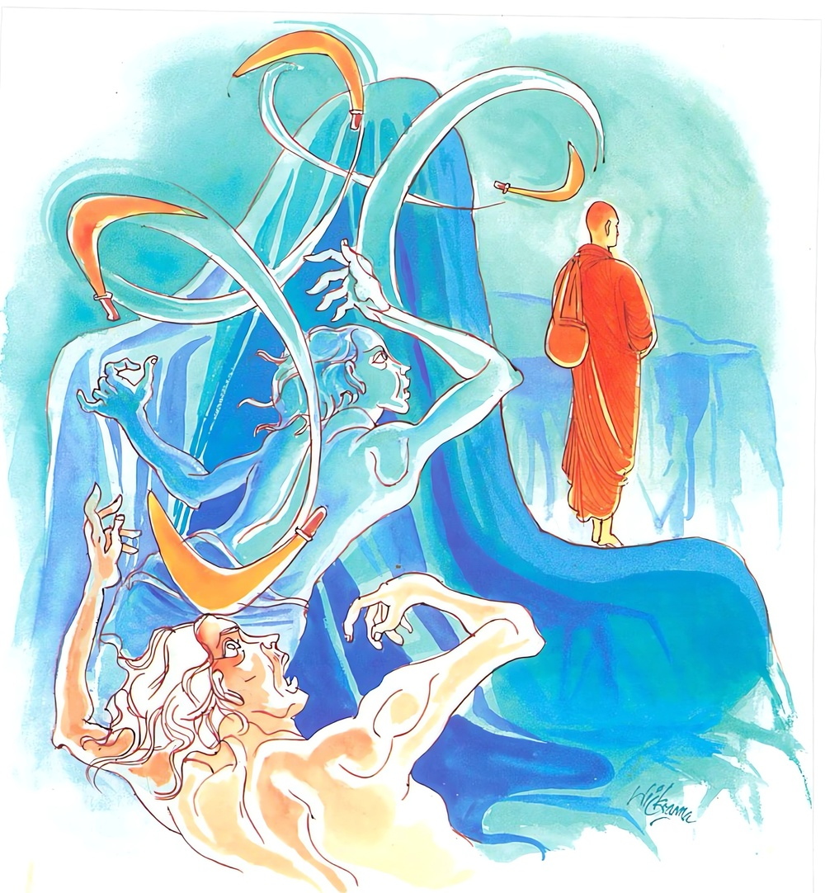

9-9 නවවන කෝක නම් බලුවැද්දාගේ වස්තුවයි.
මෙම කතාව සද්ධර්ම සාගරයෙන් ද කියවන්න.
යො අප්පදුට්ඨස්ස නරස්ස දුස්සති
සුද්ධස්ස පොසස්ස අනඞ්ගණස්ස
තමෙව බාලං පච්චෙති පාපං
සුඛුමො රජො පටිවාතං’ව ඛිත්තො.
(තමහට වත් සියලු සත්නට වත්) අදුෂ්ට වූ (හෙවත් නිරපරාධවූ එ හෙයින් ම සියලු සතුන් කෙරෙහි ම මෛත්රීපර වූ නොකැලැඹුණු සිත් ඇති), නිරපරාධ වූ සිත් ඇති හෙයින් පිරිසිදු වූ, නිඃක්ලේශී වූ, (‘නර’ ය ‘පුරුෂ’ යැ යි කියන ලද) සත්තවයකුහට යම් පුද්ගලයෙක් දුෂ්ට වේ ද (අතින් පයින් සැතින් දඬුයෙන් පැහැරීම් ආදියෙන් අපරාධ කෙරේ ද), ඔහු විසින් කරන ලද ඒ පාපකර්මය තෙම උඩු සුළඟට දමන ලද සියුම් රජසක් මෙන් (නිරපරාධයනට අපරාධ කළාවූ) ඒ අඥානයා කරා (මෙ ලොව හෝ පර ලොවැ නරකාදියෙහි හෝ විපාක දුක් දෙමින්) පැමිණෙන්නේ ය.

යො අප්පදුට්ඨස්ස ආදි මේ ධර්මදේශනාව බුදුරදුන් දෙව්රම වාසයකරන කාලයේ කෝක නම් බලුවැද්දකු අරභයා දේශනා කරනලදි.
ඔහු එක්දිනක උදේ වරුවේ දුන්නත් රැගෙන තමන්ගේ දඩබල්ලන්ද පිරිවරාගෙන කැලයට යන අතර, අතරමග පිඬු පිණිස හැසිරෙන එක් භික්ෂුවක් හමු වී කාලකණ්ණියෙක් මට මුණ ගැහුණේයයි කලකිරී අද මට කිසිදෙයක් හමුනොවේයයි සිතමින් ගියේය.
තෙරණුවෝත් ගමේ පිඬුසිඟා ආහාර ගෙන නැවත විහාරයට වැඩියහ. අනිත් තැනැත්තාත් කැලයට ගොස් කිසිවක් නොලැබ ආපසු එනවිට නැවතත් තෙරුන් දැක අද මම මේ කාලකණ්ණියා දැක කැලයට ගොස් කිසිවක්ම ලබාගත නොහැකිවීමි. දැන් යළිත් මොහු මුණගැසුණේය. බල්ලන් ලවා මොහු කවා ලන්නෙමියි සංඥාවක් දී සුනඛයන් මුදා හැරියේය. තෙරණුවෝ එසේ නොකරව උපාසකයයි ඉල්ලා සිටියෝය. අද මම ඔබ හමුවූ නිසා කිසිවක් නොලදිම. නැවතත් මට මුණගැසීමට ආවෙහිය. තා බල්ලන් ලවා කවා ලන්නෙමියයි කියා බල්ලන් පිටත්කර හැරියේය. තෙරණුවෝ වහා එක් ගසකට නැගී පුරුෂප්රමාණ උසින් සිටියෝය. බල්ලෝ ගස පිරිවරා සිටියහ. කෝක එහිගොස්, ගසට නැගුණත් තොපට මිදීමක් නැතැයි ඊතලතුඩකින් තෙරුන්ගේ යටිපතුල විද්දේය. තෙරණුවෝ එසේ නොකරවයි ඉල්ලා සිටියේමය. අනිකා උන්වහන්සේගේ ඉල්ලීම පිළිනොගෙන නැවත නැවතත් විද්දේමය. තෙරණුවෝ එක් පාදයක් විදින විට එය උඩට ගෙන අනිත් පයින් සිටිති. එය විදින විට අනික් පය තබා අනික ඔසවයි. මෙසේ ඒ වැද්දා තෙරුන්ගේ ඉල්ලීම පිළිනොගෙන දෙපාදයම විද්දේය.
තෙරුන්ගේ සිරුර පන්දම්වලින් පුළුස්සන්නාක් මෙන් දැවෙන්ට පටන්ගත්තේය. තෙරණුවන්ට වේදනාව නිසා සිහි එලවාගන්ටත් අපහසු විය. පෙරවූ සිවුර ගැළවී වැටෙද්දීත් එය සලකාගත නොහැකිවිය. ඒ සිවුර වැටී කෝකගේ හිස මුදුනේ සිට දෙපතුල දක්වා වැසීයනසේ පතිතවිය. සුනඛයෝ තෙරුන් වැටුණේය යන කල්පනාවෙන් සිවුර ඇතුළටම වැදී තම සැමියා ඇද ඇද ඉරඉරා කා දමා ඇට පමණක් ඉතිරි කළහ. සුනඛයෝ සිවුර ඇතුළෙන් එළියට අවුත් සිටියහ. ඉන්පසු තෙරණුවෝ එක් වියළිදණ්ඩක් බිඳගෙන ඔවුන් වෙත වීසිකෙළේය. සුනඛයෝ තෙරුන් දැක අපි අපේ ස්වාමියාම කා ඇතැයි වනයට ගියාහුය.
තෙරණුවෝ, ඔහු මගෙ සිවුරු අතරට ගොස් නැසුණෝය. එයින් මගේ සීලයට කිසියම් වරදක් වීදැයි කුකුසක් ඇතිකරගත්හ. උන්වහන්සේ ගසෙන් බැස බුදුන් සමීපයට ගොස් මුල පටන් ඒ පුවත දන්වා සිටියහ. ස්වාමීනි, මගේ සිවුර නිසා ඒ උපාසකයා නැසුණේය. ඉතින් මගේ සීලයට එයින් වරදක් නැද්ද? මගේ ශ්රමණභාවයට හෝ එයින් වරදක් නැද්දැයි ඇසූහ.
බුදුරජාණන්වහන්සේ ඒ තෙරණුවන්ගේ වචන අසා මහණ ඔබේ සීලයට වරදක්වී නැත. ශ්රමණභාවයටද වරදක් වී නැත. ඔහු පිරිසිදු සිල් ඇත්තෙකුට ද්රෝහීවී විනාශයට පැමිණියේය. එය මෙකල පමණක් නොව අතීතයේදීත් ද්වේෂ සිත් නැත්තන්ට ද්වේෂ කිරීමෙන් විනාශයට පැමිණියේමයයි වදාරා එහි අර්ථය පැහැදිලිකරමින් අතීතකථාව ගෙනහැර පෑහ.
අතීතයෙහි එක්තරා වෙදෙක් වෙදකම් පිණිස ගමේ ඇවිද කිසි වෙදකමක් නොලැබ බඩගිනි වී නික්ම ගොස් ගම්දොර බොහෝ ළමයින් සෙල්ලම් කරනු දැක මොවුන්ට සර්පයෙකු ලවා දෂ්ටකරවා වෙදකම් කොට ආහාරපාන ලබා ගන්නෙමියි සිතා එක් රුක්ඛිලයක හිස ඔසවා සිටින සර්පයෙකු පෙන්වා, එම්බල කොල්ලනි, අර පෙනෙන්නේ සැළලිහිණි පැටියෙකි. ඔහු අල්වාගනුවයි කීවේය. එක් ළමයෙක් සර්පයාගේ බෙල්ලෙන් තදින් අල්වා පිටතට ගෙන ඌ සර්පයකු බව දැන ඇවිදගෙන අවුත් ළඟ සිටි වෙදාගේ ඔළුව උඩට දැම්මේය. සර්පයා වෙදාගේ උරහිස් දැඩිව වෙළාගෙන දෂ්ට කොට එතැනම මරා දැමීය. මෙසේ මේ කෝක බලුවැද්දා පෙරත් ද්වේෂ නොකරන්නන්ට ද්වේෂකොට විනාශයට පැමිණියේ යයි ශාස්තෘන්වහන්සේ මේ අතීත කථාවද ගෙනහැර පා අනුසන්ධි ගළපා දහම් දෙසමින් මේ ගාථාවද වදාළසේක:
තරහ නැති නිකෙලෙස්
පිරිසිදු අයට කිසිවෙක්
තරහෙන් පිරී ඉතිරී
තරහෙන් යමක් කළහොත්
යටිසුළඟෙහි දැමූ දූවිලි
දැමූ අය සොයා එනු මෙන්
විපාකය ඔහු වෙතට ගෙන එයි
එහි අප්පදුට්ඨස්ස යනු තමන්ට හෝ සියලු සතුන්ට ද්වේෂ නොකරන්නාටයි. නරස්ස යනු සත්ත්වයාටයි. දුස්සති යනු අපරාධ කිරීමයි. සුද්ධස්ස යනු අපරාධ නොකරන්නාටය. පොසස්ස යන මෙයද වෙනත් අයුරකින් සත්ත්වයාටම කියන නමකි. අනංගනස්ස යනු කෙලෙස් නැති තැනැත්තාටය. පච්චෙති යනු ආපසු එයි. පටිවාතං යනු එක් පුරුෂයෙක් පටිවාතයෙහි-සුළඟ ගසාගෙන තමන් වෙත එන වාතයෙහි සිට තවත් කෙනෙකුට පහර දෙනු කැමැත්තෙන් වීසිකරන ලද සියුම් දූවිලි ඒ පුරුෂයා වෙතම ආපසු එයිද, ඔහු උඩටම වැටෙයිද, එපරිද්දෙන් යම් කෙනෙක් තරහක් නැති කෙනෙකුට අතින් පයින් ගැසීමෙන් ද්වේෂය ඇතිකර ගනීද, ඒ ගැසූ පුද්ගලයා වෙතම මෙලොවදී හෝ පරලොවදී පැසවමින් ඒ පාපය විපාකදුක් වශයෙනුත් ආපසු එයි යන අර්ථයි. දේශනාවසානයෙහි ඒ භික්ෂුව රහත් බවෙහි පිහිටියේය. පැමිණි පිරිසටද එය සාර්ථක දේශනාවක් විය.